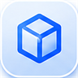
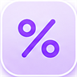

จำนวนอ้อยเข้าหีบ
—
กำลังโหลด…
CCS of Factory
—
กำลังโหลด…
% Burnt Cane
—
กำลังโหลด…

% Cane as TELQ
—
กำลังโหลด…
ขายไฟ (EDL)
—
กำลังโหลด…
AI-Powered Dashboard for Smarter Factory
อัปโหลดข้อมูล วิเคราะห์อัตโนมัติ
และสร้าง Dashboard อัจฉริยะในไม่กี่วินาที
และสร้าง Dashboard อัจฉริยะในไม่กี่วินาที
iDash - สร้างแดชบอร์ดของคุณ
อัตโนมัติ
คลิกเพื่อเลือกช่องทาง หรือลากไฟล์มาวางที่นี่
รองรับไฟล์ Excel, CSV, JSON
ทำงานในเครื่อง 100% ข้อมูลของคุณปลอดภัย
🌧️ อากาศ × อ้อย สะหวันนะเขต (โรงงาน)
กำลังโหลดพยากรณ์…
ดูแผนที่พยากรณ์ทั้งหมด →
Quick Access
AI Chatbot
เปิดเต็มจอ →
iDash AI Dashboard Intelligence Platform · Version 1.0.0 · © 2025 Mitr Lao Sugar Co., Ltd.